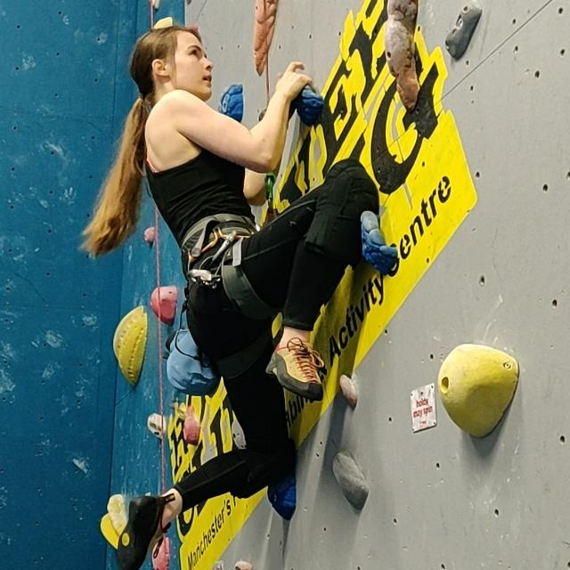

Climbing Experience
- Competitive Climbing Experience
- Teaching Climbing
- CWI Qualification Route
During my youth, I gained experience climbing competitively both indoors and outdoors. I began climbing at age seven in the south of France and started competing in departmental and regional competitions from 2009 to 2013. While training for these competitions I was fortunate enough to experience both indoor walls and outdoor routes. In 2013, I moved to Exeter, UK, and joined a squad training for BMC competitions but was unable to continue due to the progression of my disability. I am currently trying entirely new methods of climbing but I am sure I will make a return to competitive climbing in the near future.
As a part of my training for the climbing competitions I supported my climbing instructors in both teaching and supervising the younger climbers. This has given me a great basis to be abe to teach newcomers to the sport. More recently I have been introducing my friends to bouldering and auto-belay climbing and instructing them each week. I began teaching correct belay technique and have taught one of my friends who is now confident in belaying me without supervision.

As part of my continual development plan I am currently focusing on passing my CWI as it will allow me to continue competing and teaching. As a current member of the BMC I am awaiting a safe time to book the training sessions, unfortunately, these have been delayed numerous times due to the ongoing pandemic. In the meantime, I have dedicated myself to familiarising myself with various teaching techniques by shadowing climbing trainers’ sessions and gaining more experience with para-climbing techniques.